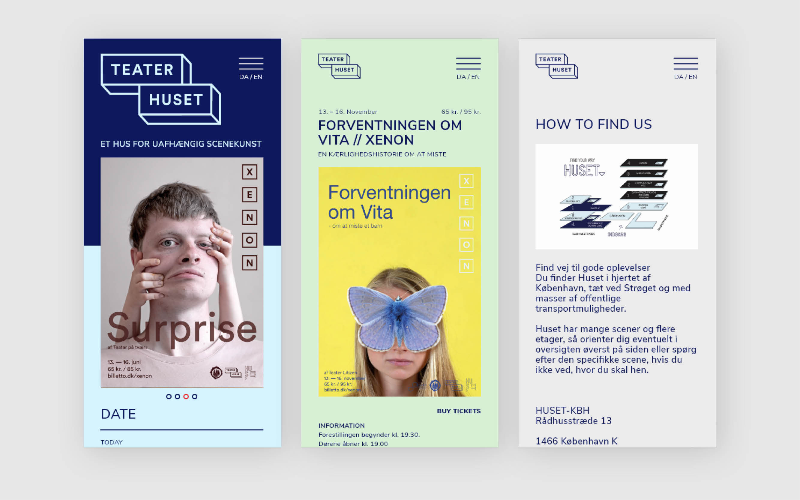

Lisa Grünwaldt
Work
About
Contact
EN
Kbh-Huset redesign
Focus
design, photopgraphy
links
project
School project, why and how I developed it to be applied for the orchestra.
In order for Danmarks Underholdningsorkester to reach kids through classical music, we need to get the teachers and adults around them interested first. How do we create a visually interesting and compelling solution for Danmark’s Underholdningsorkester that hooks both adults and children? Giving the gift of classical music to future generations.
In order to gain a deeper understanding of our project, we decided to spend a substantial amount of time on the research stage.
